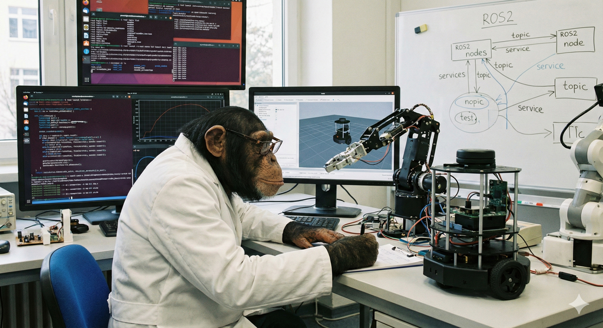

ROS2 (Robot Operating System 2)  ROS 2 (Robot Operating System 2) ROS 2 Humble ros2 명령어 매뉴얼 ROS2 Versions ROS2 Autoware ROS2 항공전자 PlotJuggler PX4 with ROS2 Humble ROS2 RMW NVIDIA for ROS2 ROS2 GUI ROS2 리소스를 활용한 GUI 애플리케이션 개발 micro-ROS micro-ROS 시각화 ROS2 RViz2 소스 코드 구조 Foxglove Studio Webviz Cruise Webviz 센서 퓨전 ROS2 환경에서 IMU, RTK-GPS, 바로미터를 이용한 다중 센서 퓨전 및 상태 추정 로깅 ROS2 로깅 시스템